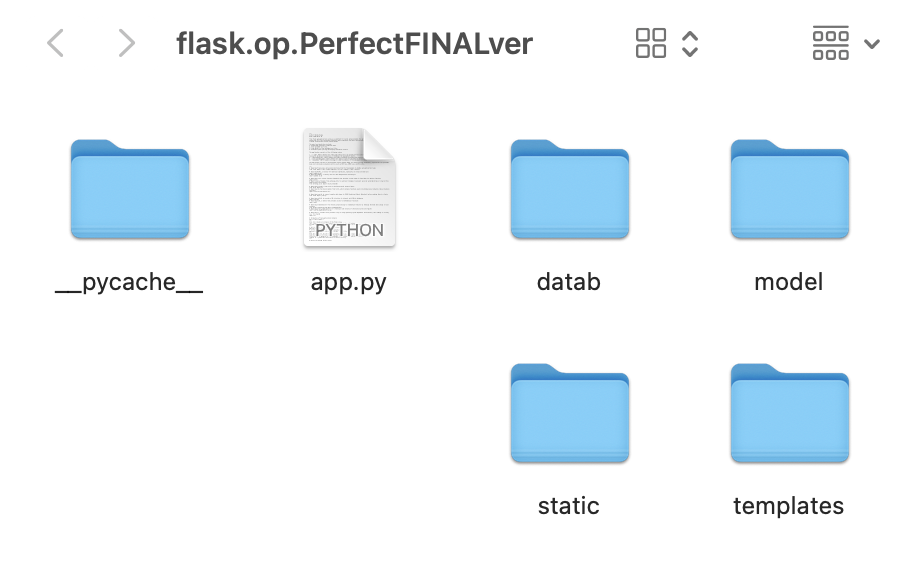
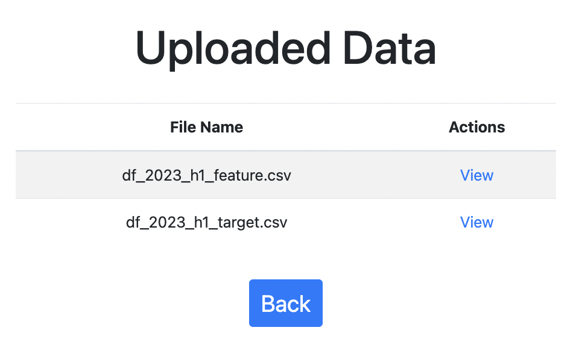
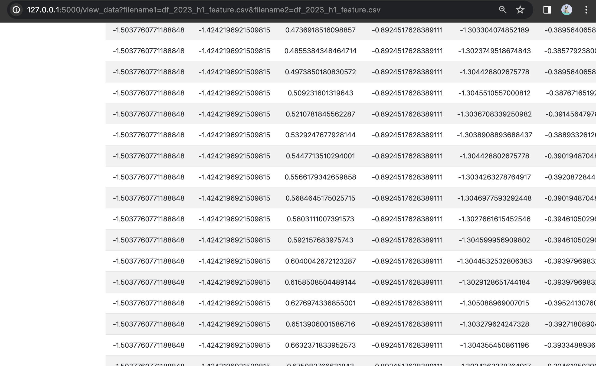

Part 3: Flask Web App Development for Option Intrinsic Value Prediction
After completing data preprocessing and constructing a one-dimensional Convolutional Neural Network (CNN), we have successfully enabled the prediction of call and put options’ intrinsic values. The subsequent step involves operationalizing this model: we will explore how to integrate it into a web application, thus allowing users to make predictions and view results. This transition marks our shift from theoretical analysis to practical application, demonstrating the real-world utility of our intellectual efforts.
3.0 Web App Implementation Outline
The implementation strategy for our Flask web application development can be encapsulated as follows:
Web Application Framework Construction: Utilize the Flask framework to build a web application that processes user-uploaded financial data and displays prediction outcomes.
Model Preparation: Define a Convolutional Neural Network (CNN) specifically designed for financial data prediction. This model includes multiple convolutional layers, batch normalization layers, and residual connections to boost performance and training efficiency—a milestone already achieved by our team.
Model Loading and Data Preprocessing: Load the pre-trained model (
best_model_ultimatel.pth) and perform data preprocessing. This step involves reading data from an uploaded CSV file and applying the preprocess_data function to execute feature scaling, data splitting, and other preparatory operations, mirroring the CNN model setup.Model Training and Prediction: Employ the PyTorch library to load the pre-trained model and input the preprocessed data for prediction.
Results Presentation: Exhibit the model’s performance metrics on the test dataset, such as Mean Squared Error (MSE), Root Mean Squared Error (RMSE), and R-squared score, along with the prediction outcomes. These are visualized using
Plotlycharts, providing a comprehensive view to the users.

app.py: Central to the application, this file contains key functions likeConvolution1D,preprocess_data,Index,show_prediction,get_table_info,view_uploaded_database, andview_database, which are integral to the app’s operation.Templatesfolder: This directory holds all the HTML files needed for the app’s user interface, enabling interactions and data display. It includesindex.html,plot.html,view_uploaded_data.html,show_prediction.html,Test_Set_Predictions.html, andview_data.html.Datafolder: Contains sample CSV files,df_2023_h1_feature.csvanddf_2023_h1_target.csv, used for data upload and result demonstration in the app.Modelfolder: Houses the pre-trained model file essential for making data predictions.__pycache__folder: A system-generated directory that caches bytecode, enhancing the program’s execution speed.Staticfolder: Stores static files, crucial for the app’s styling and interactive features.
This organizational structure ensures that each aspect of our Flask web application is well-arranged and easily accessible, supporting efficient development and maintenance.
3.1 Overview and Impact Analysis of Functions in app.py
In the app.py file, several key functionalities are pivotal to the web application’s operation, specifically tailored for financial data analysis and option pricing evaluation. These include:
- Upload and Preprocess Financial Data: This functionality allows users to upload their financial datasets and applies preprocessing techniques to prepare the data for analysis.
- View Uploaded CSV Files: Users can view the list of uploaded CSV files, providing an overview of the data available for processing.
- View Details of the Uploaded CSV Files: This feature enables users to delve into the specifics of each uploaded CSV file, examining the data more closely.
- Evaluate Option Pricing and Display Evaluation Results: The application assesses the pricing of options based on the uploaded data and displays the results, offering valuable insights into option valuation.
The app.py file incorporates essential libraries and modules to facilitate web development, data processing, machine learning, and visualization:
from flask import Flask, render_template, url_for, request, flash, redirect
import numpy as np
import pandas as pd
import torch
from werkzeug.utils import secure_filename
from torch import nn
import torch.nn.functional as F
from flask import jsonify
import sqlite3
import math
from sklearn.preprocessing import StandardScaler
import plotly.graph_objects as go
import osConvolution1D Class
The Convolution1D class within our application is a custom neural network module extending nn.Module from PyTorch, designed for one-dimensional convolutional operations. This class embodies a series of convolutional, batch normalization, and fully connected layers, structured to facilitate complex pattern recognition in financial data. Notably, this implementation includes residual connections and dropout for robustness and generalization.
Note: Building on the foundational work previously established by our team members, this segment is presented without extensive analysis to minimize redundancy.
Torch.load
In this section of the code, we address the computational efficiency and resource optimization for running our neural network model. The code snippet demonstrates the dynamic allocation of processing units, preferring GPU over CPU for faster computation, which is crucial for handling complex models like Convolution1D. We then load the model’s state dictionary from the file ‘best_model_ultimate.pt’. The map_location argument ensures that the loaded state dict is moved to the appropriate device. This step initializes the model with previously trained parameters, allowing for further training,evaluation, or inference without retraining from scratch. Here’s a detailed look at the operations:
# Check for available GPU, otherwise use CPU
device = torch.device('cuda' if torch.cuda.is_available() else 'cpu')
# Initialize the Convolution1D model and transfer it to the chosen device
model_loaded = Convolution1D().to(device)
# Load the previously trained model state
model_loaded.load_state_dict(torch.load('model/best_model_new.pt', map_location=device))
# Set the model to evaluation mode
model_loaded.eval()Preprocess_data
The preprocess_data function tasked with preparing the financial data for subsequent analysis. It performs several key steps:
- Data Loading: Reads the financial datasets from the specified CSV files.
- Normalization: Applies
StandardScalerto normalize specific columns, ensuring uniform data scaling. - Data Merging: Combines the feature and target data into a single DataFrame for comprehensive analysis.
- Data Splitting: Segregates the dataset into training, validation, and test sets, facilitating a structured approach to model training and evaluation.
Given that these processes align with our prior data handling endeavors, we will highlight only the main actions and points, avoiding detailed analysis to prevent redundancy.
Index()
The index function in app.py serves as the main entry point for our Flask web application. It handles both GET and POST requests, managing file uploads, data preprocessing, model evaluation, and rendering the results. This function aligns with our previous work, emphasizing efficient data processing and model integration. Key points include handling file uploads, data preprocessing, model prediction, error calculation, and result visualization. Below is the detailed code:
@app.route('/', methods=['GET', 'POST'])
def index():
"""
This function serves as the endpoint for the root URL ('/'). It handles both GET and POST requests,
rendering the index page of the web application. During a POST request, it processes uploaded files
for option pricing evaluation, performs predictions, and returns the results along with rendering
the HTML template.
Returns:
render_template: Renders the HTML template based on the request method and the operations performed.
"""
# Check if the request method is POST, which indicates that data has been submitted to the server
if request.method == 'POST':
# Check if both files are present in the request
if 'file1' not in request.files or 'file2' not in request.files:
# If either file is missing, flash a message to the user and reload the page
flash('No file part')
return redirect(request.url)
file1 = request.files['file1']
file2 = request.files['file2']
# Check if file names are not empty, meaning that the user has selected files
if file1.filename == '' or file2.filename == '':
# If no file is selected, flash a message and reload the page
flash('No selected file')
return redirect(request.url)
# Check if both files exist and proceed with processing
if file1 and file2:
# Secure the file names and prepare the file paths
filename1 = secure_filename(file1.filename)
filename2 = secure_filename(file2.filename)
file1_path = os.path.join(app.config['UPLOAD_FOLDER'], filename1)
file2_path = os.path.join(app.config['UPLOAD_FOLDER'], filename2)
# Save the files to the server
file1.save(file1_path)
file2.save(file2_path)
# Notify the user that files have been uploaded successfully
flash('Files successfully uploaded')
# Preprocess the data from the uploaded files
X_train, X_val, X_test, y_train, y_val, y_test = preprocess_data(file1_path, file2_path)
# Evaluate the model on the uploaded data
criterion = nn.MSELoss() # Mean Squared Error Loss function
with torch.no_grad(): # No gradient computation for evaluation to save memory and computations
output = model_loaded(X_test.to(device)).squeeze(-1) # Model prediction
predictions = output
test_loss = criterion(predictions, y_test.to(device)) # Calculate the test loss
# Compute the Root Mean Square Error (RMSE) for the test data
mse_loss = criterion(predictions, y_test)
rmse_loss = mse_loss.item() ** (0.5)
# Compute the R-squared (R2) score to measure the goodness of fit
from sklearn.metrics import r2_score
r2 = r2_score(y_test, predictions)
# Create a plot of the predictions against the true values
fig = go.Figure()
fig.add_trace(go.Scatter(x=np.arange(len(output)), y=output.squeeze().numpy(), mode='lines', name='Predicted', line=dict(color='red')))
fig.add_trace(go.Scatter(x=np.arange(len(y_test)), y=y_test.numpy(), mode='lines', name='True', line=dict(color='blue')))
fig.update_layout(title='Test Set Predictions', xaxis_title='Index', yaxis_title='Value')
# Save the plot output to a file
plot_output_path = os.path.join('static', 'Test_Set_Predictions.html')
fig.write_html(plot_output_path)
# Render the index HTML template with the results and plot path
return render_template('index.html', test_loss=test_loss.item(), mse_loss=mse_loss.item(),
rmse_loss=rmse_loss, r2_score=r2, plot=plot_output_path)
# If the request method is GET, render the index HTML template without any prediction or plot
return render_template('index.html', prediction=None, plot=None)
In summary, the index function is integral to the Flask application. It is pivotal for deploying predictive models effectively, ensuring that the application not only performs its intended analytical tasks but also provides a user-friendly interface for interaction and result interpretation.
### show_prediction
The `show_prediction` function in `app.py` is designed to handle GET requests specifically for displaying the prediction results on a separate page. This functionality is crucial for providing users with access to the outcome of their data analysis, ensuring a clear and dedicated view of the predictive results.
Here's a detailed analysis of the function:
- **Path Definition**: Initially, the function defines the path to the prediction results file, typically stored in the `static` directory. This standardization of file location facilitates consistent access and retrieval of the results.
- **Existence Check**: The function then checks if the prediction results file exists at the specified path. This check is essential to prevent errors that would occur if the application attempted to display a non-existent file.
- **Conditional Rendering**: If the file exists, the function proceeds to render an HTML template (`Test_Set_Predictions.html`) specifically designed to display the prediction results. This template is passed the path of the prediction plot file, ensuring that the correct data is displayed.
- **Redirection**: In cases where the prediction results file does not exist, the function redirects the user to the index page. This redirection mechanism prevents user confusion and ensures a smooth user experience by guiding them back to the starting point of the application.
Here is the complete code snippet:
```python
@app.route('/show_prediction', methods=['GET'])
def show_prediction():
# Define the path to the prediction results file, assumed to be in the 'static' directory
plot_output_path = os.path.join('static', 'Test_Set_Predictions.html')
# Check if the prediction results file exists
if not os.path.exists(plot_output_path):
# If the file does not exist, redirect the user to the index page
return redirect(url_for('index'))
# If the file exists, render the template to display the prediction results,
# passing the path of the prediction plot file to the template
return render_template('Test_Set_Predictions.html', plot_output_path=plot_output_path)
### get_table_info
The `get_table_info` function is designed to streamline the process of extracting filenames from full file paths, which is a common requirement in web applications handling file uploads. By utilizing `os.path.basename`, it efficiently strips the directory path, leaving only the file name. This functionality is particularly useful in scenarios where the display or processing of filenames, independent of their storage paths, is required. Here's how the function operates:
```python
def get_table_info(file1_path, file2_path):
return [os.path.basename(file1_path), os.path.basename(file2_path)]
### view_uploaded_data
The `view_uploaded_data` function in the Flask web application serves to showcase the files that have been uploaded by users. This endpoint, accessible via a GET request, retrieves and displays the contents of the upload directory in the application's user interface. Here's an in-depth look at the function and its code:
```python
@app.route('/view_uploaded_data', methods=['GET'])
def view_uploaded_data():
"""
Handles the GET request to display the uploaded database files.
This endpoint fetches the list of files present in the upload directory and displays them
on the 'view_uploaded_data.html' page. This allows users to see which files have been
uploaded to the application.
The function retrieves the filenames from the specified upload folder set in the app's configuration
and passes these filenames to the rendering template.
"""
# Retrieve the list of files in the upload directory
files = os.listdir(app.config['UPLOAD_FOLDER'])
# Render the HTML template, passing the list of files for display on the webpage
return render_template('view_uploaded_data.html', files=files)
### view_data
The `view_data` endpoint in the Flask application is designed to showcase the details of the uploaded CSV files through a GET request. It facilitates the inspection of the contents of these files, enhancing the user's ability to interact with and analyze the uploaded data. The function operates by expecting `filename1` and `filename2` as query parameters, utilizing these to locate and display the respective files' contents. Here's a closer look at the function and its operations:
```python
@app.route('/view_data', methods=['GET'])
def view_data():
"""
The function checks for the existence of the specified files in the upload directory.
If both files exist, it reads them as CSVs and prepares the data for viewing. If either
file is missing or an error occurs during file reading, the user is redirected to the
file upload view with an appropriate error message.
"""
# Retrieve filenames from the request's query parameters
filename1 = request.args.get('filename1')
filename2 = request.args.get('filename2')
# Validate that both filenames are provided
if not filename1 or not filename2:
flash('No data file selected.')
return redirect(url_for('view_uploaded_data'))
# Construct full file paths
file1_path = os.path.join(app.config['UPLOAD_FOLDER'], filename1)
file2_path = os.path.join(app.config['UPLOAD_FOLDER'], filename2)
# Check if both files exist in the specified upload folder
if not os.path.exists(file1_path) or not os.path.exists(file2_path):
flash('Data file not found.')
return redirect(url_for('view_uploaded_data'))
try:
# Attempt to read the files as CSVs and store their contents
ds = pd.read_csv(file1_path)
target = pd.read_csv(file2_path)
table_data = {'Dataset 1': ds, 'Dataset 2': target}
except Exception as e:
# Handle any error that occurs during file reading and flash an error message
flash(f'Error accessing CSV files: {e}')
return redirect(url_for('view_uploaded_data'))
# Render the view template with the loaded table data and filenames
return render_template('view_data.html', tables=table_data, filename1=filename1, filename2=filename2)
The concluding part of our Flask application's code features the standard Python idiom to check if the script is executed as the main program and not imported as a module. This check is crucial for initiating the Flask server only when the script is run directly, ensuring that the application's startup process is controlled and deliberate. The `app.run(debug=True)` line activates the Flask application server with debug mode enabled, which is beneficial during development for its detailed error feedback and live reloading capabilities. Here's the segment:
```python
# This conditional statement checks if the script is run as the main program.
# Ensure that code is only executed when the script is run directly, and not when imported as a module.
if __name__ == '__main__':
# The app.run(debug=True) command starts the Flask application server.
# The debug=True argument enables debug mode, which provides useful feedback in the browser for development,
# including detailed tracebacks and live reloading on code changes.
app.run(debug=True)
## 3.2 Evaluative Overview of HTML Templates: Implications for User Interface and Experience

Our web application uses a set of HTML templates, each carefully crafted to improve how users interact with and see data. These templates are essential to the app's design, blending good looks with practical use. They guide users from the start of entering data to the end of seeing the results.
- `index.html`: Serves as the primary gateway to the web application, designed for predicting call option values. It incorporates Bootstrap for styling, providing a responsive layout with file upload forms, navigation buttons, and result display sections, thus ensuring a user-friendly experience.
- `plot.html`: Utilizes Plotly for dynamic data visualization, offering interactive charts that render complex datasets in an easily digestible format, enhancing the analytical capabilities of the application.
- `view_uploaded_data.html`: Lists the uploaded database files, enabling users to access and review the data they have provided, fostering transparency and control over the processed information.
- `view_data.html`: Exhibits the content from two distinct datasets, providing a comprehensive view of the data under analysis and facilitating a deeper understanding of the predictive context.
- `show_prediction.html`: Displays the outcome of predictive analyses, guiding users to detailed visual representations and insights derived from their data.
- `Test_Set_Predictions.html`: Incorporates Plotly JavaScript to generate interactive data visualizations, allowing for an engaging and informative exploration of predictive results within the web environment.
Next, we will conduct a comprehensive analysis of each template's functionalities and contributions, examining the web pages in our prototype to assess their quality and effectiveness.
### 3.2.1 Welcome Page
Our welcome page design seamlessly integrates various elements to optimize `user experience` and `functionality`. Users are provided with intuitive `"Browse" buttons` to swiftly upload local CSV files. Upon clicking the `"Upload & Save" button`, evaluation results are promptly generated within a few-second timeframe, ensuring `efficiency` in data processing. Additionally, users can easily access and review their uploaded dataset (csv files) online by selecting the `"View Data"`. For a comprehensive analysis, users can explore `interactive prediction graphs` through the `"View Prediction" feature`, enhancing their ability to interpret and analyze data trends effectively.

#### Color Scheme and Aesthetics `index.html`
- **Color Choice:** In `index.html`, we deliberately choose a light blue background color (#ADD8E6) to promote a serene ambiance conducive to focused reading and analysis. The semi-transparent white background (rgba(255, 255, 255, 0.8)) within container elements aims to highlight content while maintaining visual harmony.
```html
<style>
body {
background-color: #ADD8E6;
padding-top: 20px;
display: flex;
justify-content: center;
align-items: center;
height: 100vh;
}
.container {
max-width: 800px;
text-align: center;
background-color: rgba(255, 255, 255, 0.8);
padding: 40px;
border-radius: 20px;
}
/* Additional CSS styles for buttons, labels, and text sizes are also defined in this section */
</style>
#### Modular Design with Bootstrap in `index.html`
- **Grid System Utilization:** We utilize Bootstrap's grid system to create a responsive layout, dividing content into grid columns with classes like `container`, `row`, and `col-*`, ensuring seamless alignment across devices. This fosters a visually appealing and user-friendly design. Here's how it's integrated:
```html
<div class="container">
<!-- Content structured using Bootstrap's grid system -->
</div>
- **Custom CSS Classes Integration:** Custom CSS classes are integrated to style elements such as buttons, forms, and text, maintaining a cohesive design language and enhancing visual appeal.
```css
.btn-group .btn {
margin: 0 10px;
font-size: 36px;
}
- **Responsive Design Features:** Leveraging Bootstrap's responsive utilities like breakpoints and flexbox classes (`d-flex`, `justify-content-center`, `align-items-center`), we ensure our webpage adapts smoothly to various screen sizes and orientations for optimal user experience.
```html
<div class="container">
<iframe src="{{ plot }}" width="100%" height="500px"></iframe>
</div>
- **Component Reusability:** By using Bootstrap's built-in components such as navigation bars, buttons, and forms, we enhance code modularity and maintain a consistent design language throughout the project, saving time and effort in UI development.
```html
<div class="btn-group" role="group" aria-label="Actions">
<a href="{{ url_for('view_data') }}" class="btn btn-info">View Data</a>
<a href="{{ url_for('show_prediction') }}" class="btn btn-info">View Prediction</a>
</div>
### 3.2.2 Evaluation & Results Page
After clicking the `"Upload & Save"` button, the client is directed to our **Evaluation & Results** page, where they can view both numerical results and an interactive graph which provides visual insights, allowing users to explore and analyze the data trends effectively.

**Numerical Results Display in `evaluate_and_visualize.html`**
```html
{% if test_loss is defined %}
<h2>Evaluation Results:</h2>
<p>Test Loss: {{ test_loss }}</p>
<p>MSE Loss: {{ mse_loss }}</p>
<p>RMSE Loss: {{ rmse_loss }}</p>
<p>R2 Score: {{ r2_score }}</p>
<iframe src="{{ plot }}" width="100%" height="500px"></iframe>
{% endif %}Clarity: The page presents evaluation metrics such as Test Loss, Mean Squared Error (MSE) Loss, Root Mean Squared Error (RMSE) Loss, and R-squared (R2) Score in a clear and structured manner using HTML
<p>tags. This clarity enhances the understanding of model performance.Precision: The page ensures the precision and accuracy of displayed numerical values, crucial for data analysis. It typically maintains a precision of at least ten decimal places, ensuring data accuracy for in-depth analysis and comparison.
Contextual Rendering: The use of conditional blocks ensures that numerical results are displayed only when relevant data is available, preventing confusion and presenting information contextually.
Embedding Plotly Graph in evaluate_and_visualize.html
<iframe src="{{ plot }}" width="100%" height="500px"></iframe>- Visual Analysis: The page enhances data analysis by embedding a Plotly graph within an
<iframe>. This interactive graph provides visual insights into trends and patterns, complementing the numerical results. - Interactivity: Users can interact with the embedded Plotly graph, such as zooming, panning, and hovering over data points to view detailed information. This interactivity fosters a deeper understanding of data trends and anomalies.
- Integration: The seamless integration of the Plotly graph within the HTML page enhances user experience, allowing for a comprehensive analysis of model performance with both numerical and visual data representations.
3.2.3 View Data Page
By clicking the “View Data” button, users are directed to the data page, where all previously uploaded data files are displayed. Each file is accompanied by a “View” button on the right-hand side, allowing users to view the uploaded data online with a single click.

File Listing in view_data.html
<!-- Table body section to display the content. -->
<tbody>
<!-- Loop through each file in the 'files' list passed from the Flask backend. -->
{% for file in files %}
<tr>
<td>{{ file }}</td> <!-- Displaying the file name. -->
<td><a href="{{ url_for('view_data', filename1=file, filename2=file) }}">View</a></td> <!-- Link to view data. -->
</tr>
{% endfor %}
</tbody>- The “File Name” column displays each uploaded file’s name, fetched from the
fileslist passed from the backend. Within each table row ( ), the file name is displayed in the “File Name” column ( {{ file }} ). This ensures that users can easily identify and select the files they want to view.
Actionable Links in view_data.html
<td><a href="{{ url_for('view_data', filename=file) }}">View</a></td>The “Actions” column provides a convenient “View” link for each file, allowing users to seamlessly navigate to detailed data views with a single click. This intuitive design enhances the overall user experience and promotes efficient data exploration.
The “View” links are dynamically generated using Flask’s powerful
url_forfunction, ensuring accurate and reliable navigation to the corresponding data views.
3.2.4 View Uploaded Data Page
When users click the “View” button on the View Data Page, they are seamlessly navigated to a dynamically generated web page that displays the data they have previously uploaded. This feature provides users with a convenient and intuitive way to access and examine their uploaded datasets within the application, enhancing the overall user experience and facilitating efficient data analysis.

Dynamic Content Rendering in view_uploaded_data.html
The <tbody> section of the table dynamically displays uploaded files. This functionality is achieved through the use of server-side templating, specifically with Jinja2 in Flask, allowing for iteration over a list of files and rendering each as a row in the table.
- Functionality: Iteration over the
filesarray to create a table row for each file. - Data Binding: Server-side rendering with
{ file }to bind file names directly into the table. - Dynamic URL Generation: The
url_forfunction generates actionable links for each file, enabling user interaction.
Here is the code snippet in view_uploaded_data.html illustrating this functionality:
<tbody>
<!-- Table body section to display the content. -->
{% for file in files %}
<!-- Loop through each file in the 'files' list passed from the Flask backend. -->
<tr>
<td>{{ file }}</td> <!-- Displaying the file name. -->
<td><a href="{{ url_for('view_data', filename1=file, filename2=file) }}">View</a></td>
</tr>
{% endfor %}
</tbody>
### 3.2.5 View Prediction Page
Upon selecting the "View Prediction" button on the initial interface, users are directed to a page displaying test set predictions, featuring an interactive graph created with Plotly. This visualization fosters an engaging user experience, permitting detailed examination of the predictions. The graph's interactive features—zoom, pan, and data point hover—provide enriched informational access, allowing tailored analytical perspectives.

The graph offers intuitive controls for a seamless user experience. Users can double-click to revert to the original zoom level after examining specific intervals. The operation bar in the upper right corner allows users to download the plot as a PNG, autoscale the axes, and reset the axes effortlessly.


**Dynamic Plot Rendering with Plotly in `plot.html`**
```html
<script src="https://cdn.plot.ly/plotly-latest.min.js"></script>
<div id="plot"></div>
<script>
var plot_path = "{{ plot_path }}";
Plotly.d3.html(plot_path, function(error, data) {
if (error) {
return console.warn(error);
}
document.getElementById('plot').innerHTML = data;
});
</script>Integration with Plotly: The inclusion of the Plotly library through the
<script>tag is a significant aspect of this template.Asynchronous Data Fetching: The JavaScript block fetches the plot data asynchronously using Plotly’s d3.html function. This method loads the plot data from a specified path (plot_path), which is dynamically provided by the server-side application. This approach ensures that the webpage remains responsive and that the plot is updated seamlessly without the need for a full page reload.
Dynamic Content Loading: The template utilizes an empty
element with the id plot, which serves as a placeholder for the graph. The actual content of the graph is loaded dynamically through JavaScript, enabling the webpage to render data-driven plots efficiently.
Conditional Rendering and Link Generation in show_prediction.html
{% if prediction %}
<h3>Predicted Mean: {{ prediction }}</h3>
<p><a href="{{ plot }}" target="_blank">View Test Set Predictions Plot</a></p>
{% else %}
<p>No prediction available</p>
{% endif %}
<a href="{{ url_for('index') }}" class="btn btn-primary">Go Back</a>Conditional Content Display: The template employs Jinja2’s conditional syntax {% if prediction %} to check the presence of a prediction variable. This approach ensures that the user interface adapts to the data context, displaying the prediction results when available. If the prediction variable contains a value, the template renders an
<h3>tag showing the predicted mean, enhancing the user’s understanding of the model output.Dynamic Link Creation: The template dynamically generates a link to a plot
(<a href="{{ plot }}" target="_blank">)when prediction data is available. This link, opened in a new tab (target=“_blank”), leads to a detailed visualization of the test set predictions.
Summary
Our web application, through its meticulously designed templates and key features, offers a streamlined and enriched user experience. We are committed to enabling users to efficiently manage, analyze, and interpret their data within a cohesive and intuitive environment. By providing a user-friendly interface and powerful functionality, we sincerely aim to empower users to harness the full potential of their data. Our goal is to support users in making informed decisions and fostering a deeper understanding of their analytical contexts.